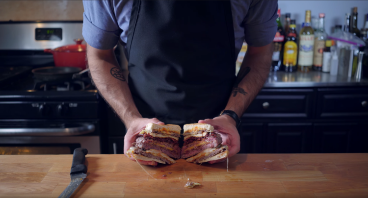

Binging With Babish's Ultimatum Burger Recipe from Regular Show
Want to return to exotic food menu? Click here!

Before we actually start the process of recreating this delicious looking burger, we have to first get our ingredients ready for the burger making process
Ingredients
Over all you are going to need:
A pot
A stove
A high powered blender
A fine-meshed sieve
Pink Himalayan Salt
Spatula (Preferably one for making smash burgers)
A large cooking rod or mallet to press down your Spatula with
For the Himalayan ketchup you will need:
- Grated Ginger
- Grated tumeric
- Sliced birdseye chile
- 3 cloves of grated garlic
- A very small hint of cinnamon
- A much larger hint of chili powder
- about half a teaspoon of mustard seed
- about half a teaspoon of ground toasted cumin
- about half a teaspoon of ground toasted coriander seed
- about half a teaspoon of nigella seed
- A few table spoons of olive oil
- Malt vinegar
- 28 oz can of crushed tomatoes
- Brown Sugar
For the Actual Ultimatum burger
- Olive Oil (Any kind of oil works, just depends on what you have on hand)
- Cheese (You can have a variety of different cheese if you like more flavor)
- Bacon
- Ground Beef
- Pastrami
- Burger Buns (About 2 pairs of burger buns)
- Your Himalayan Ketchup (or normal ketchup if you don't want Himalayan Ketchup)
- Salt
- Pepper
Directions:
For the Himalayan Ketchup:
- Have your Grated Ginger, Grated tumeric, Sliced birdseye chile, grated garlic, cinnamon, chilli Powder, mustard seed, Ground toasted cumin, ground toasted coriander seed, and Nigella Seed ready, perhaps on a clean board of some kind
- Have your pot ready on the stove
- Put in a few table spoons of olive oil into your pot and set your stove to about medium-high heat
- Put in your many ingredients from the first step that are on your board and quickly put them all in the pot
- Saute those ingredients in the pot for a couple of minutes, or until it gets very fragarent (It will smell amazing)
- Deglaze the ingredients in your pot by pouring in a little bit of malt vinegar and add a 28 ounce can of tomatoes
- Add some brown sugar
- You may adjust the amount of brown sugar and malt vinegar, and may add more or less to your liking
- Mix those ingredients well
- Let it simmer for at least an hour
- After an hour you'll have a think smooth paste
- Pour your thick ketchup paste in a blender and puree for about three to five minutes
- Run your ketchup mixture through a fine meshed sieve to make it even more smooth and ketchup like
- Season your ketchup with some pink Himalayan salt
- Enjoy your wonderful Himalayn Ketchup
For the Ultimatum Burger:
- Grab some ground beef and create a very large and thin patty
- Place some cheese and bacon on top of this large thin patty, ensure that the large thin patty is bigger than your cheese and bacon (Add as much cheese and bacon as you like, but make sure it isn't too much)
- Place another similiar size large and thin patty ontop of your cheese and bacon topped patty
- Seal the sides of your burger to make sure there're no opening, so now you have a very large cheese and bacon stuffed burger patty
- Grab your pan, place it on your stove and turn it on medium-high heat, and put some olive oil in the pan
- Place your bacon and cheese stuffed burger patty in your pan and season it with salt and pepper
- Once the bottom of your patty seems well cooked and friend carefully flip the patty over, perferabbly with a spatula
- Once done remove your large stuffed burger patty out of the pan
- Grab some ground beef and roll 2 ground beef balls, roll them with your hands (you can use gloves if you like) if you have to
- Reapply some olive oil into your pan if necessary and place your 2 ground beef balls into your pan
- Take your spatula and place it on top of one of your ground beef balls, put oyur large cooking rod or mallet on top of your spatula and press down to flatten your ground beef ball into a smash-burger patty
- repeat the previous step for your other ground beef ball patty
- when your smash-burger patties are well cooked flip them over, and top them both with a slice of cheese and a bit of salt and pepper
- once the smash-burger patties appear well cooked remove them and place them on a plate
- Reapply some olive oil if necessary to your pan
- Grab your pastrami and slice it so you have slices of pastrami, slice as many as your like and then place them into your pan in order to fry them
- Once the pastrami appears to be well fried remove them and place them on a plate
- Grab your burger buns and toast them, with a toaster or you may cook one side on your pan by applying butter to your pan and placing the inside of the burger buns on the pan
- Once you have your toasted burger buns ready assemble your two burgers by placing your cheese topped smash burgers in your toasted burger buns so you have two smash burgers ready
- Put some of your Himalyan ketchup, or normal ketchup, on top of one your burgers, and place your gigantic cheese-bacon stuffed patty on top of your burger with Himalayan ketchup and ensure that the large, stuffed patty is stable on top of your burger
- Put some of your Himalayn ketchup, or normal ketchup, on top of your large, stuffed burger patty
- Place your crispy fried pastrami on top of your large, stuffed burger patty
- Top off your masterpiece with the final, 2nd smash, burger patty
- Gaze upon your glorious ultimatum meaty goodness
- Attempt to take a bite out of this gigantic burger, or you can get a cross section of down the middle of the burger if you desire
- Enjoy!